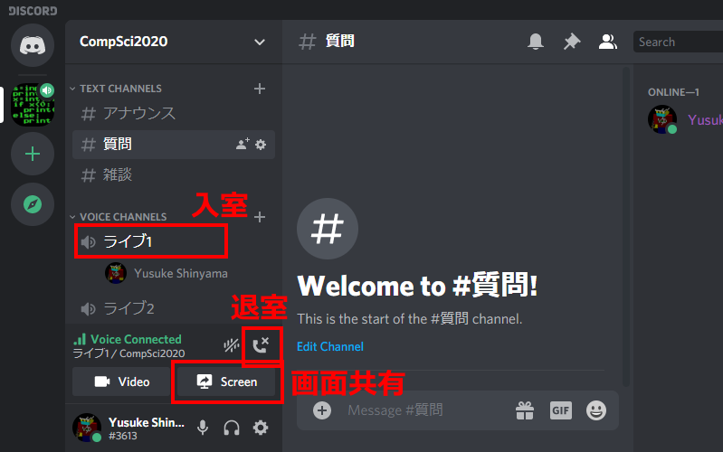

ガイダンス - 本授業について
2020年10月1日
- はじめに
- コンピュータ (計算機) とは何か?
- コンピュータ サイエンス (計算機科学) とは何か?
- 本授業でやること
0. はじめに
0.1. 講師・TA紹介
講師
- 名前: 新山 祐介 (しんやま ゆうすけ)
- 1994年: 東工大 第5類 入学。 (現在の情報理工学院)
- 1998年: 東工大 大学院 情報理工学研究科 入学。
- 2001年: 米ニューヨーク大学 博士課程。
- 2007年: 日本に帰国、都内の某中小企業にプログラマーとして就職、
視覚障害者の支援機器を開発。
(東工大の同期はみんな一流メーカーに入社した)
- 2020年: 超スマート社会卓越教育院に着任。
- 研究テーマ: プログラムのソースコード解析。(プログラム理解、自動バグ修正など)
- ボランティア: 視覚障害者の生徒にプログラミングを教えている。
- 趣味: 旅行、ゲーム開発、Youtube動画翻訳。
TA
0.2. 質問するには
- 授業中の Zoomチャットを使う。
- 質問は、プライベートではなくクラス全体にしてください。
- Discord で質問する (授業中に参加リンクを配布する)。
- Discordアプリをインストールしてください。
- 匿名で参加可能。東工大以外のメールアドレスでも参加できます。
- 24時間いつでも利用できます。(ただし夜間・休日は教員の返信はありません。)
- 雑談もOK。
- チャットでの発言が成績に影響することはありません
(が、マナーの悪い人は退出してもらいます)。
- 内容の一部は、授業等で公開することがあります。
ご了承ください。
- うまく動かない場合は、自分のパソコン画面の
スクリーンショットを撮って送ってもよい。
スクリーンショットの取り方は授業中に説明する。
- 教員・TAに個別に相談したいときは、オフィスアワー中に
Discord のチャットルーム (ライブ1, ライブ2) でおこなうこと。

- 注意:
課題や成績に関する個別の質問は、必ずメールで。
このとき氏名・学籍番号を書くこと。
- メール:

@shinyama.jp
(斜線が入っている文字は数字の 0 です。英字の O と区別するためにこうしてあります。)
- 原則として、質問に答えられるのは大学の業務時間 (平日 8:30〜17:15) に限ります。
0.3. 成績評価の方法
- 課題提出により評価する。
- 小課題 (各5点×8 = 40点)。
- 中課題 (各20点×3 = 60点)。
- 授業中の質疑応答 (1回につき3点)。
(101点以上の点数は100点に切り詰めるものとする。)
- 出席しなくても課題さえできれば点数を与える。
(意志が弱い人にはおすすめしない。)
- 提出期限を過ぎたものは原則として 0点とする。
- 本授業では、課題提出はすべて T2SCHOLA を使っておこなう。
レポートの採点基準
- 小課題の場合:
- そもそもPythonで実行できないプログラム: 0点
print("Hello, world)
while i < 10
i = i + 1
- 一応動くが、間違った結果を表示するプログラム: 3点
- 正しく動くプログラム: 5点
- 中課題 (レポート) の場合:
- レポートとしての体裁が整っていない (PDFでない、名前・題名などが書かれていない) ものは減点。
- プログラムの各部分について説明していないものは減点。
(ダメな例)
このプログラムは授業で説明したものとほとんど同じである。
数字を表示してすこしずつ変化させていくことでアニメーションを実現する。
以上。
- 工夫したこと、苦労したことなどが書かれているものは追加点。
不正行為に関する警告
課題で他人の答えを写す、試験中に別の答案を見るなどの不正行為は、
大学においては (オリンピックのドーピングと同様に) 重罪である。
これに違反した場合、単位の剥奪、停学 (最悪の場合) などがありうる。
不正行為をした科目の点数は 0 点になる。
- やり方について友達と相談するのはOK。
- 答えを直接教えたり、見たりするのはダメ。
- 見せたほうも同罪。
したがって、うっかり見せないよう注意すること (自分の安全のため)。
- 「ただの脅し文句で、実際に罰されたりはしないだろう」と思ったら大間違い。
過去にそういった例があります。
- 逆に課題と直接関係ない部分は、いくらでも聞いてOK。
むしろ、PCの使い方とかは積極的に友達や先生の技を盗むこと。
なお、OCW-i / T2SCHOLA に提出する際のコメント欄はほとんど読まないので、
あまり重要なことは書かないこと。(読みとばす危険性がある)
1. コンピュータ (計算機) とは何か?
1.1. コンピュータの機能
言うまでもなく「計算する機械」だが、人間と比べると以下のような違いがある:
情報とは?
- メールの文章
- 写真
- 動画
- 航空券の予約、電子カルテ、ハイスコアなど
1.2. コンピュータの使用例
現代の日本社会では、大量の情報処理がなければ日常生活が成り立たない。
- セブンイレブンでおにぎりを買う。
- コンビニ1店舗に約 3,000種類の商品。つねに補給される。
- セブンイレブンで1年間に売れるおにぎりは 16億個。
(曜日・行事の有無・天気によって個数は毎日変わる)
- コンビニは全国に50,000店舗。
- 1つの工場から約1,000店舗に出荷。
- 天気予報。
- アメダスは全国に1300箇所。10分ごとに更新。1日に合計312,000個のデータ。
- 過去10年間の観測結果… 約11億個のデータ。
- 写真をLINEで送る。
- 電車に乗る。
- JR東日本における 1日あたりの列車本数 約13,000本。
- 郵便・宅急便を受けとる。
- 1年間の荷物 13億個。
- 宅配便の営業所は全国に260,000箇所。
- 1年間の郵便物 250億通。
1.3. コンピュータの歴史
2. コンピュータ サイエンス (計算機科学) とは何か?
- いわゆる「自然科学」ではない (自然を研究しない)。
- どちらかといえば数学に近い。
- 数学 … 抽象的な実体 (数、関数など) について学ぶ。
- コンピュータサイエンス … 抽象的なプロセス (過程) について学ぶ。
- コンピュータがなくても「コンピュータサイエンス」はありうる!
2.1. コンピュータサイエンス的な考え方の例
- 分割統治法
- 国家、軍隊、会社 etc.
- 各部分に「リーダー」をおく。
- 各部分はさらに細かい部分に分けて管理される。
- 番号による管理
- たとえば全国は都道府県ごと 47の中央郵便局に分かれているとしよう…
- 宛て先に「中野区松が丘」と書いてあったら、何県の郵便局?
- 宛て先に「中野市松川」と書いてあったら、何県の郵便局?
- 郵便番号は、ある意味、人間を機械として扱っている。
これにより効率と正確さが確保される。
- 並列化
- 選挙の大量の票を集計する。
- 大量のものに連番をふる。
- 閉塞
- 単線の列車で安全を確保するための方法。
- 通信や電気系統が壊れても 100% 動作する。
これらのものに共通する特徴は「効率化」「信頼性の確保」である。
2.2. コンピュータサイエンスを学ぶことのメリット
- コンピュータ関連の企業でなくても
「コンピュータサイエンスのわかる学生」を欲しがる。なぜでしょう?
- 組織・社会における「プロセス」を厳密に考えられるようになる。
- 効率さ・正確さを確保するための考え方が学べる。
- 「プログラミング言語を習える」のは、副次的なメリットにすぎない。
- プログラミング言語はあくまで「考えを表現する」ためのもの。
- 異なる用途によって適したプログラミング言語が異なる。
「これさえ覚えれば完璧」などという万能の言語は存在しない。
- 何百種類もある。ひとつ覚えても、次々と新しい言語が発明される。
(プログラミング言語にも流行がある。)
- 実際に動くシステムを作るためには、
プログラミング言語以外にもいろいろな知識が必要である。
3. 本授業でやること
本授業では、コンピュータサイエンス的な考え方 (上で説明) を学ぶために、
プログラミング言語 Python を使って練習する。
ただし、Python が 10年後には時代遅れになっている可能性もあるので
「Pythonの知識」そのものは大して重要ではない。
むしろ「どんなプログラミング言語でも使える知識」を
学ぶことに重点をおく。
コンピュータサイエンス第一
- 英語でいえばアルファベットを習う程度。自分のやりたいことを記述できるレベルではない。
- 予想される作業量: 授業 約10時間、課題 約20時間 (あくまで目安)。
コンピュータサイエンス第二
- 自分の意図を (簡単なものであれば) 自力で記述できるレベル。
- コンピュータサイエンス第二まで終えた人は、
「プログラミングがちょっとできます」と言う資格がある。
- 予想される作業量: 授業 約10時間、課題 約30時間 (あくまで目安)。
本授業でやらないこと
- 特定のシステム (ゲーム、アプリ等) の作り方。
- たとえばスマートフォン用のゲームを作るためには、
プログラミング言語に加えて、画面表示やOSの機能などの
広範囲な知識が必要。
プロになるには
(注意: 新山の個人的な意見です。)
情報系の授業を取れば自動的にプログラマになれるわけではないし、
たとえ情報系の学科を出たとしても、大学の授業だけでは
まったく不十分である。
本授業でソフトウェア開発に興味をもった人が、
今後プロとして活躍するには、以下のような訓練が必要になる:
- 各プログラミング言語について、最低 500時間以上の練習
(本授業の課題の約10倍程度) をおこなう。
- Python だけでなく、複数の言語 (Java, C++, SQL など) を扱えるようにする。
用途によって最適な言語を選択できるようにする。
- プログラミング以外にも、ハードウェア制御やデータベース、ネットワーク、
グラフィックス、会計などの分野に精通する。
- 優れたコミュニケーション力を育てる。
企業はチームワークであるので、他人と協力できないと大きな仕事はできない。
- ITの分野はたえず進化しているので、今後登場する新技術や
プログラミング言語を絶えず (大学を卒業してからも) 学習しつづける。
Yusuke Shinyama